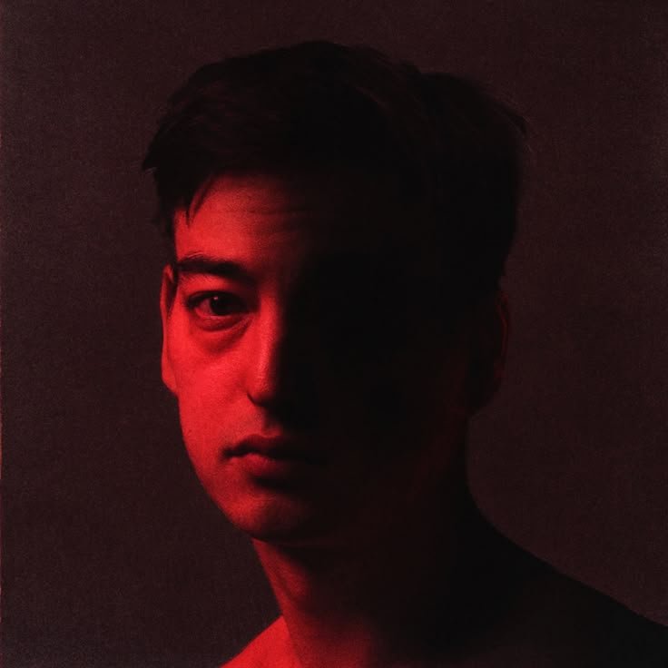
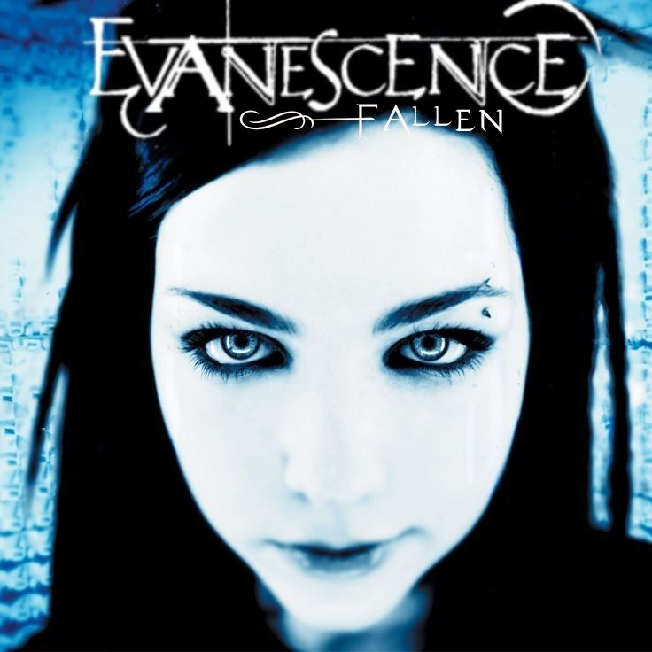
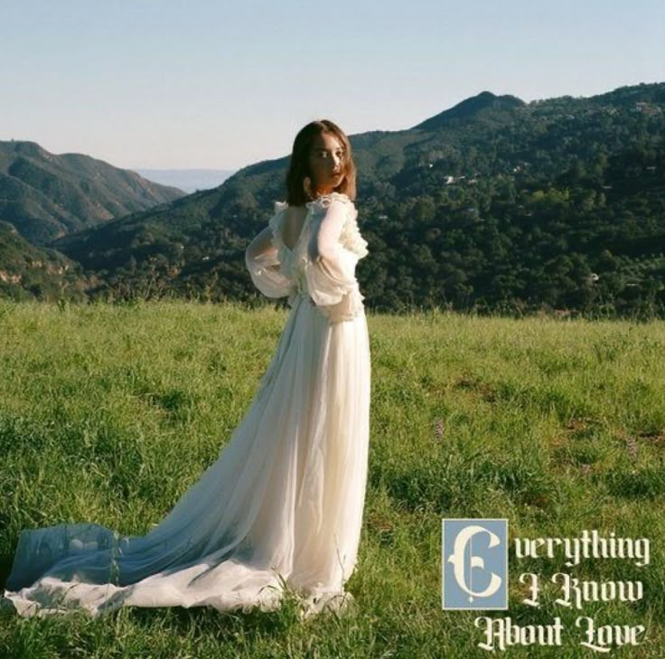
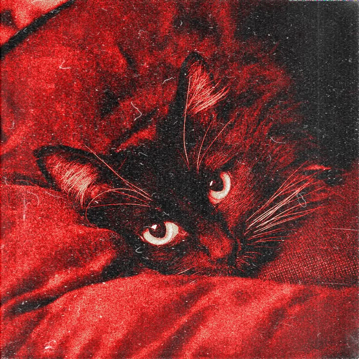
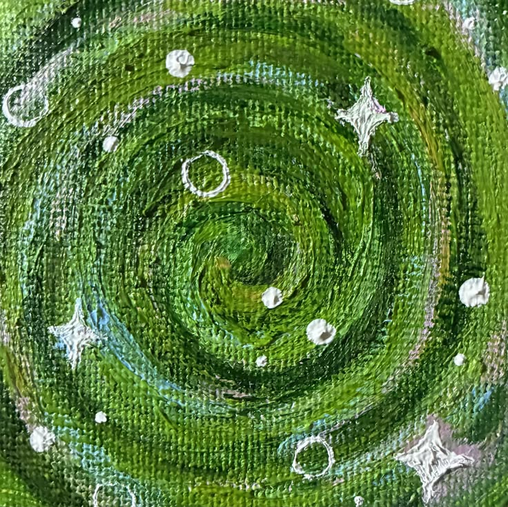

THE ROWDYRUFF BOYS
The trio of disappointment to conquer the world of Web Development.
ZARKYS JOSH
The liscensed vibe-coder whose apps are hackable and prone to malware.
DeployNOVIE GLYN
The other absurdistic alien who who loves cats while absolutely doing nothing.
DeployLEMUEL
The nihilistic developer who has no will to code. Might just be absurdist, so I can do anything I want.
Deploy


ZARKYS JOSH GASCON
Every error and bugs has a solution, if not just open riot client.
Personal Details:
- Age: 20
- Date of Birth: January 25, 2006
- Address: Zone-8, Calumpang Molo, Iloilo City
- Phone #: 094956664999
- Email: zarkyjosh.gascon-24@cpu.edu.ph
Expanded Hobbies:
Cardio: I love doing long cardio +21km runs and I've been on cardio since I was 15
Video games: I love playing League of Legends and Wildrift been playing league since I was grade 5 until now, if my code doesn't work in the IDE, you'll know what else I'd be running (Riot Client).
Music: I also play the guitar, been playing it for years and still not good at :> but just average.
Retrospection:
One of the key insight I learned is that no matter how big a problem is, it always has a solution.


NOVIE GLYN FARROL
Have you changes because you met me? - Ichise(Texhnolyze)
Personal Details:
- Age: 20
- Date of Birth: Nov. 7, 2005
- Address: Brgy. Cabanga-an, Badiangan, Iloilo
- Phone #: 09818142004
- Email: novieglyn.farrol-24@cpu.edu.ph
Expanded Hobbies:
Skating: I love skating and cruising around my hometown, and even in the city.
Music: I also play instruments such as keyboard and guitar, and make music.
Making art: Drawing traditionally and digitally, is also what I love in my free time.
Retrospection:
"When I was in ROTC, I learned to not impose my will and decision on the external world, since forcing my choices will cause suffering and irritation. However after I finished my ROTC, I learned to express myself in many different ways, such as art. I also tried to implement an absurdist way of thinking, and learned to larp since I have the same birthday as Albert Camus, who created and formalized Absurdism. I crave to create anything that can express my ideas, emotions and thoughts, even if I risk being misunderstood, all I strive for is to discover my subconscious and nurture it until my last breath."


LEMUEL LUCEÑO
"Every rejection, every disappointment has led to me this moment. Don't let anything distract you." - Alpha Waymond
Personal Details:
- Age: 20
- Date of Birth: December 31, 2005
- Address: Brgy. Cabugao, Roxas City, Capiz
- Phone #: 09605901864
- Email: lemuel.luceno-24@cpu.edu.ph
Expanded Hobbies:
Writing: I was a journalist back when I was in elementary and I develop sense of literacy in a young age. Before I step in to college, I resigned as a journalist and continue my path in SE and at the same time still making poetries to comfort my wreaking soul.
Sewing: When I was in JHS, I take fashion lesson with my Tita in Roxas every summer. So if you ask why I took software engineering instead of fashion school, is because software engineering is my dream course and what I learned with my Tita is basically the foundation in making good clothes.
Playing games: As an SE student, the passion of gaming will not burn out in my heart. It is what fuels me and keeps me motivated to be an SE student, and a way to cope when things are pressed.
Retrospection:
Before I went to the Software Engineering, I had no clue how to code. And I always tell to myself that it will be taught. This is a dream job since JHS, when my sister asked what engineering course should I take. As long I'm logically packed and eager to create, I'll be fine. For my 2 years stay here in SE, I have learned many technical skills and humbling lessons that granted experience. I have learned the basic programming that is staple among many computer languages, the OOP, the application of mathematics in programming, data structures & algorithms, and lastly project management. So this sem I am retaking Web dev because I failed last year due to unknown circumstances, but it doesn't matter because I can do anything what I want. Nothing matters.





THE GALLERY
Where all the correlation and connection of the mischievous three creates a three-body problem.